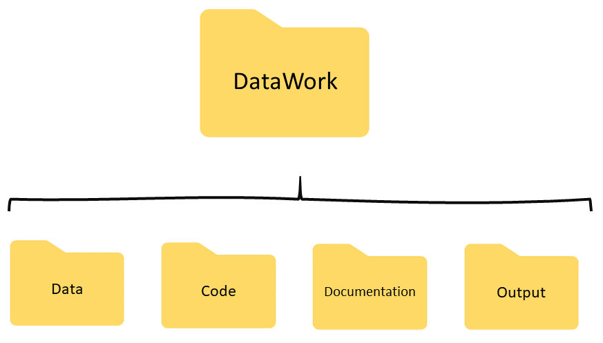
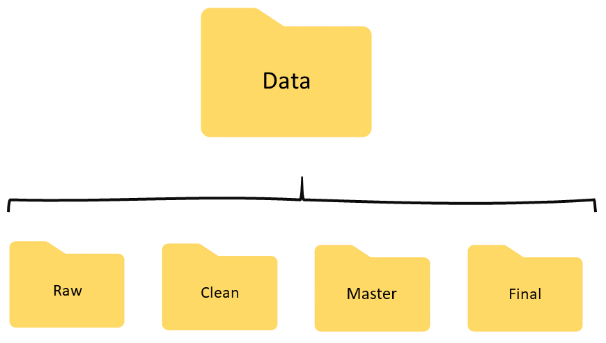
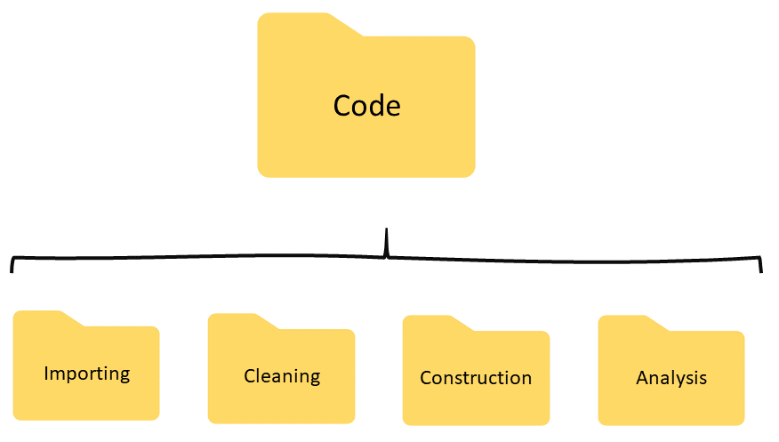
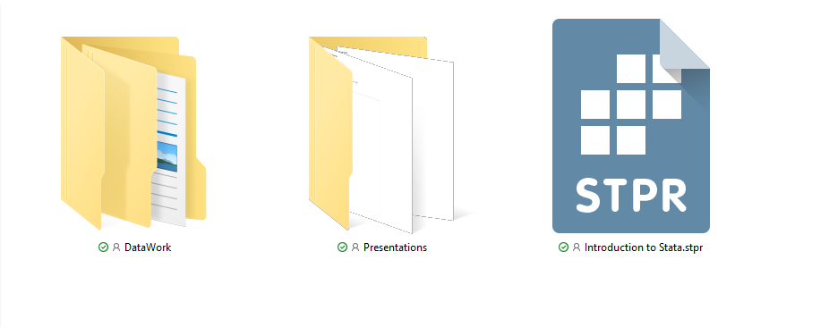

Data Management
Kristoffer Bjarjefür, Luíza Andrade, Roshni Khincha
You do not have time to not set up a system
Without a system for effective and efficient collaboration, too much of a team’s data work time is spent on other things than answering questions using the data. For example:
- Searching for files in the project folder
- Fixing errors to make someone else’s code run
- Searching in old emails for answers to questions
- Guessing how the old versions of the file that generated the last report could have looked like
Creating a plan for collaboration
Try to predict at the start of a project what technical tools you will need at any point in the project. It is ok to update if needed, but always better if avoided.
- How will data be received?
- Where will data be processed and analyzed?
- Will only regular computers be needed? Or are server/cloud resources needed?
- Which programming language will the team use?
- How will you track different versions of
- Code?
- Data?
- Outputs?
- How will files and folders be named?
Creating a plan for collaboration
Standardizing organization of documents and code prevents mistakes and reduces the cost of transitioning across projects and teams. This includes things as simple as
- How will we name files?
- How will we name the folders where the files are stored?
- How will we take notes about the work we are doing?
- Where will we save the notes about the work we are doing?
Creating a plan for collaboration
- It may seem silly to spend time planning for something that is so intuitive, but it will make a difference as your data work starts to get more and more complex
- What seems intuitive for one person is not necessarily intuitive for another
- When a team does not have an open discussion about how they will organize files, people make decisions on the fly, and these decisions may not make sense for other team members (or even to the same person in a few months)
Creating a plan for collaboration
- For the purpose of this course, we have created a folder structure and used naming conventions that follow what we usually do in our department
- However, you don’t necessarily need to follow the same structure outside of this course
- What matters is that everyone in your team know the structure to be used
A mental model of research data work

A mental model of data work
- Acquiring data: this is when you receive the data that will be used to answer your questions. The format in which the data will be received often times does not depend on your team, but on whoever is sharing the data with you.
- Importing data: this is when you convert the format of the data from however it was shared with you to the format that best suits the statistical software you will be using.
- Cleaning data: this is when you process the data in the statistical software of your choice so it can be easily handled in that software.
- Constructing data: this is when you will create the indicators the will answer your questions.
- Analyzing data: this is when you will create tables and graphs that contain the answers you were looking for.
A mental model of data work
- The steps that we outlined are a pedagogical abstraction that help us think about what we are doing
- We divided data work into these steps by thinking of how the data was changing over the data work process
- In practice, many of these steps will happen at the same time
- Still, we will organize our work, including our code and our data, following these steps
- This is because the sub tasks in these steps have the same data inputs and outputs
Organizing data work

Organizing data
Data will be divided by source, unit of observation and stage of data work

Organizing data
Data will be divided by source, unit of observation and stage of data work
- Each stage of data work will be represented by one folder inside the
Datafolder - Each unit of observation will be represented by one file in the folder that corresponds to a given stage
- If you receive data from multiple sources, each source will have a separate folder inside the
Rawdata folder
Organizing code
Data will be divided by unit of observation and stage of data work

Organizing code
Data will be divided by unit of observation and stage of data work
- Each stage of data work will be represented by one folder
- Each unit of observation will be represented by one file in the folder that corresponds to a given stage
Organizing documentation
- Inside the
Documentationfolder, we will keep all the notes that we take during our project - This folder does not have a pre-determined strucutre because its contents depend a lot on the type of work that we are doing
- At the very least, however, it will have three sub-folders:
- Dictionaries, where we will store files listing the contents of each data table
- Codebook, where we will store files describing the values found on all of our variables
- Data quality issues, where we will record which issues we found in the data while exploring it, and which observations had issues
- We should add to this folder any notes about communications and decisions that we make about our data
Organizing outputs
- Inside the
Outputfolder, we will keep the graphs and figures that answer our questions - This folder also does not have a pre-determined structure
- Some teams like to have folder called
TablesandGraphs - Some teams like to have folder called
RawandFinal, whereRawcontains tables and graphs, andFinalcontains final papers and reports
Organizing data work
- When we are importing data, we will write code in the
Code/Importingfolder that takes data in Excel or csv from theData/Rawfolder and saves data in.dtato theData/Rawfolder - When we are cleaning data, we will write code in the
Code/Cleaningfolder that takes data.dtafrom theData/Rawfolder and- Saves data in
.dtato theData/Cleanfolder - Save Excel files to the
Documentation/Dictionariesfolder - Save files to the
Documentation/Codebookfolder
- Saves data in
Organizing data work
- When we are constructing data, we will write code in the
Code/Constructionfolder that takes data.dtafrom theData/Clanfolder and- Saves data in
.dtato theData/Finalfolder - Save Excel files to the
Documentation/Dictionariesfolder - Save files to the
Documentation/Codebookfolder
- Saves data in
- When we are analyzing data, we will write code in the
Code/Constructionfolder that takes data.dtafrom theData/Cleanfolder and save graphs and tables to theOutputfolder
Referencing files in code
- As you can see, we will commonly call files from within code over the different stages of data work
- This is actually harder than it may seem
- Code refers to files by their file paths, that is, where they are stored inside your computer
- This can be very tricky as
- People have a hard time understanding how a computer organizes the data inside its storage
- Different computers will store the same file in different places
Referencing files in code
- When you opened the data we used earlier today, Stata probably printed something like this on your console:
use "E:\DataWork\Data\Final\final_process.dta" Referencing files in code
- When you opened the data we used earlier today, Stata probably printed something like this on your console:
use "E:\DataWork\Data\Final\final_process.dta" Do you understand what this means?
Referencing files in code
Question: What would happen if you connected the flash drive to a different port and tried to run the same code?
Referencing files in code
Question: What would happen if you connected the flash drive to a different port and tried to run the same code?
Stata would tell you that it cannot find that file. If this happens for the same code in the same computer, can you imagine how difficult it can be to work on different computers?
Referencing files in Stata
- Fortunately, Stata has made our lives easier by creating a Project Management tool
- This tool lets you refer to a set of files by indicating to Stata where the root folder is located
- Stata will save that path and you can then only reference sub-folders in your code
Referencing files in Stata
Exercise: create a new Stata Project in your DataWork folder
1. Open Stata and then open the do-file editor.
2. Got to File > New > Project... in the top left ribbon.
3. Navigate to the same place where your DataWork folder is stored and save the project under the name “Introduction to Stata”.
4. Right-click on your project in the Project Window and select “Add existing directory”.
5. Select the DataWork folder and click “OK”
Referencing files in Stata
Exercise: create a new Stata Project in your DataWork folder
1. Open Stata and then open the do-file editor.
2. Got to File > New > Project... in the top left ribbon.
3. Navigate to the same place where your DataWork folder is stored and save the project under the name “Introduction to Stata”.
4. Right-click on your project in the Project Window and select “Add existing directory”.
5. Select the DataWork folder and click “OK”.
If this worked, you will now see all the folder inside the DataWork folder in the Project Window.
6. Right-click on your project and click “Save project”.
Referencing files in Stata
Exercise: create a new Stata Project in your DataWork folder
If this worked, you should see the following content in the folder for your flash drive .

Referencing files in Stata
Now that your project is set and open, you can reference files inside the DataWork folder by calling them through the file path that starts in DataWork.
- To open that same file, for example, you can write
use "DataWork/Data/Final/final_process.dta"Referencing files in Stata
Exercise: use the use command in the Stata session where you have your Stata project open to load the file in DataWork/Data/Clean/item_clean.dta
Referencing files in Stata
Exercise: use the use command in the Stata session where you have your Stata project open to load the file in DataWork/Data/Clean/item_clean.dta
use "DataWork/Data/Clean/item_clean.dta"Note that this will only work when you have the Stata project that you just configured open. Therefore, you should always start your work in Stata by launching this project.
Version control
- Version control is a crucial part of data management as
- Code and documents undergo a lot of revision and redrafting
- Multiple users make changes to code and documents
- It is essential to set up version control at the start of the project to avoid glitches in later stages
- The version control system that your team will adopt will depend on what technologies everyone is comfortable using
Version control
Option 1: use naming conventions
- Using file naming conventions (such as adding dates and initials as suffixes) is a very accessible option
- It is better to do this than to have no version control
- But it can get very unwieldy very quickly
Version control

Version control
Option 1: use naming conventions
- If you choose this option, make sure to agree on conventions for how to add names and dates
- If you choose this option, make sure to follow these conventions
Version control
Option 2: syncing software
- Syncing software such as Dropbox, OneDrive and Google Drive allow teams to
- Share documents
- See who made changes to documents and when
- Revert documents to older versions
- However, it doesn’t allow to easily keep track of specific changes made
Version control
Option 3: git
gitis a version control system designed to keep track of changes made to text files such as code- It allows teams to
- Share documents
- Avoid conflicts when editing documents at the same time
- See who made which changes to documents and when
- Revert documents to older versions
- However, it is a complex system with a steep learning curve
Summary
- Discuss with your team what are the standards for
- File sharing platform
- Version control system
- Storage and processing needs
- Task management system
- Where to document decisions
- Statistical software to be used
- Data security practices
- Organize folders in an intentional and consistent manner
- Use Stata projects to make sure people can edit one set of codes in different computers
- It’s fine to make adjustments as the project evolves, but having a plan before you start will avoid many hours of cleaning up your own mess